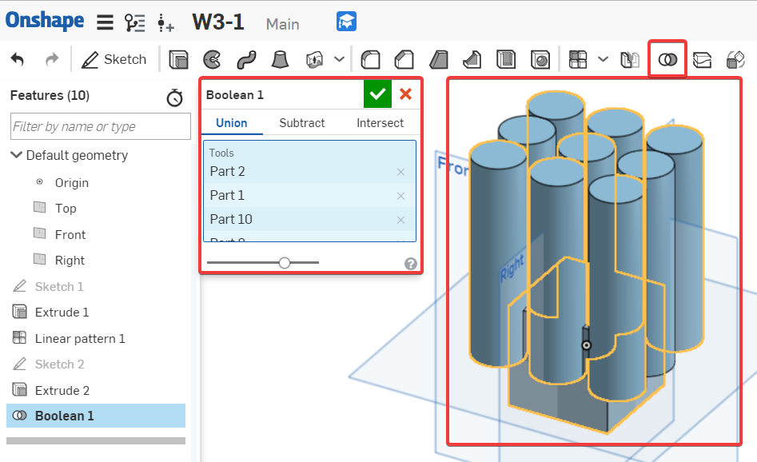
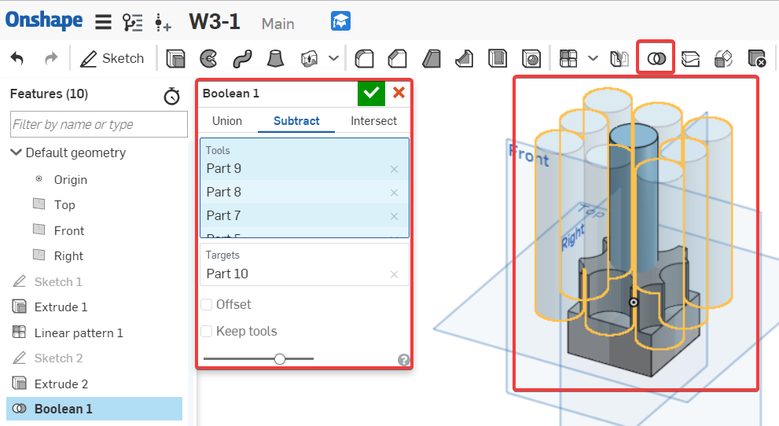
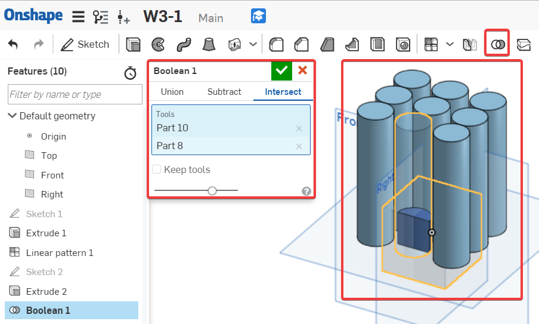
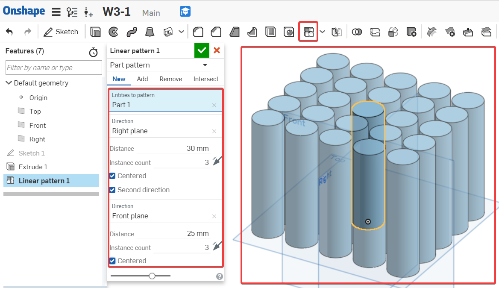
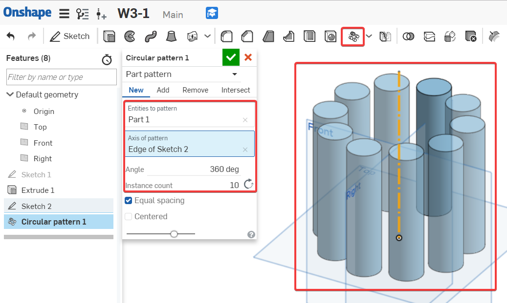

1. What are the 3 types of Boolean Operations and how do they work ? ( 3種類型的 Boolean 運算有哪些？它們如何工作？ ) Feel free to draw pictures if they help.
Boolean : Modify parts by merging parts together (Union), removing a tool part from a target (Subtract), or calculating the intersection between two or more parts (Intersect).
Boolean : 通過將零件合併在一起（接合），從目標中移除工具零件（切割）或計算兩個或多個零件之間的交點（相交）來修改零件。
a. Add/Union ( 接合 ) - A single Part is created from multiple, overlapping “Tools”. ( 合併零件 )
LP: College - Boolean Operations

b. Subtract ( 切割 ) - “Tools” are used to remove material from “Targets”. ( 移除零件，允許零件之間的偏移 )

c. Intersect ( 相交 ) - The overlapped volumes are created by multiple, overlapping “Tools”. ( 合併零件，僅在交叉點存在的地方保留材料 )
LP: College - Boolean Intersect

2. What is the main difference between a Linear and a Circular Part pattern ( 矩形陣列及環形陣列圖案之間的主要區別是什麼 ) ?
LP: College - Linear Part Pattern
LP: College - Circular Part Pattern
A Linear pattern creates parts along a straight linear reference, a circular pattern creates parts around an axis reference ( 矩形陣列圖案沿直線參考創建零件，環形陣列圖案圍繞軸參考創建零件 ) .


3. When might you use a Part Pattern versus a Feature Pattern ( 何時可以使用零件圖案與特徵圖案 ) ?
A Part Pattern patterns an individual part while a Feature Pattern patterns a specific feature (or features) listed in the Feature Tree, such as extrude, fillet, sweep, and sketch ( 零件圖案對單個零件進行圖案化，而特徵圖案對特徵樹中列出的特定特徵（或多個特徵）進行圖案化，例如拉伸、圓角、掃掠和草圖 ) .
4. Describe in your own words what “Top-Down Design” means ( 描述 “ 由上而下設計 ” 的含義 ).
Top-Down Design is when the shape of an overall product is sketched first, and then different regions of that sketch are used to create the lower level parts and their features ( 由上而下設計是指首先繪製整個產品的形狀，然後使用該草圖的不同區域來創建較低級別的部件及其特徵 ).
5. Why is it smart to put fillets and chamfers at the end of the feature list ( 為什麼在特徵列表的末尾放置圓角和倒角是明智作法 ) ?
Because they are not critical features, and having them too early in the model, could result in accidentally referencing them while creating critical geometry ( 因為它們不是關鍵特徵，如果在模型中過早使用它們，可能在創建關鍵幾何體時意外地引用到它們 ) .
6. How is the mirror tool being utilized in the creation of our Clamp design ( 如何在創建鉗子設計時使用鏡像工具 ) ?
LP: College - Week 3 (“Cantilever Clamp” Part Studio)
We are using it to save time by only modeling half of our pins and hinges, and then mirroring them over the symmetry plane ( 僅對一半的銷及其他零件進行建模，然後在對稱平面上鏡像它們來節省時間 ) .